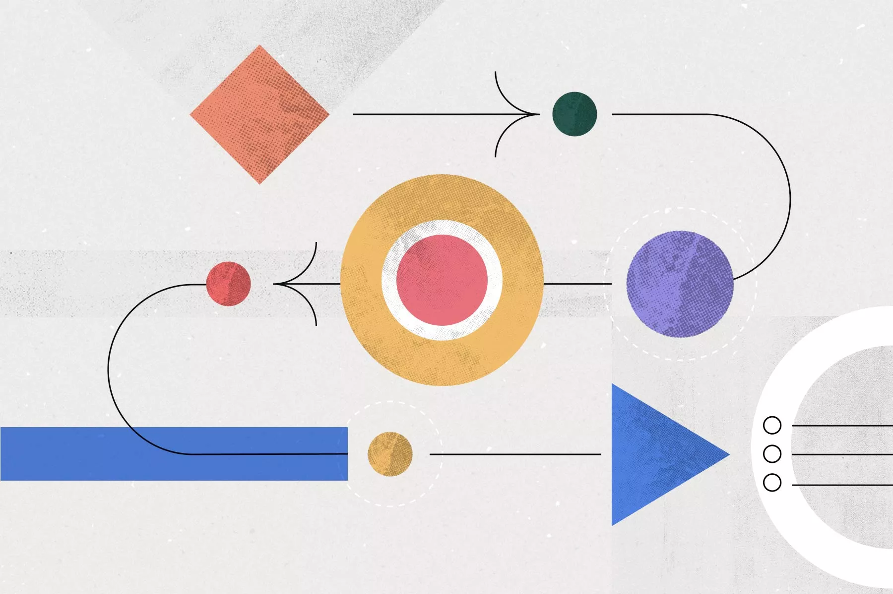
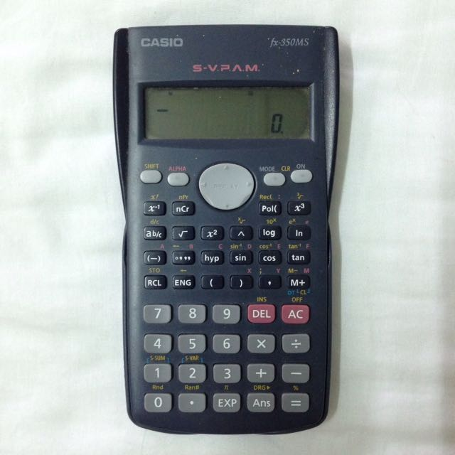
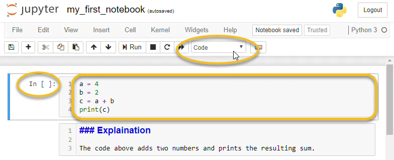

CP540: Project planning, management and methods
Note taking
L Lue
Department of Chemical and Process Engineering
University of Strathclyde
Overview
- Motivations
- Challenges
- Features of a good system
- Zettelkasten method
- Software
- Summary
Motivation

Recording information

Your mind is for having ideas, not holding them.
Types of information
- statements:
- objective
- subjective
- collective subjective
- examples:
- data
- concepts
- tasks, schedules, plans, etc.
- actions
The Collector's Fallacy

What is information?

Challenges
- large amount of information sources
- information comes in many different formats
- critical thinking is more important than being informed
- need to be able to search, retrieve, and organize information
Features of a good system
- capture ideas & thoughts
- collate / curate the information
- finding/retrieving information
- access from anywhere
- connecting different sets of notes
- backup (robust against loss)
- variety of media
Zettelkasten method
- created by Niklas Luhmann
- Zettel = paper slip, Kasten = cabinet
- system to generate, organize, and use notes
- do not use categories: use tags and links
- external thinking system / second brain

General workflow

Principles of constructing notes
- Atomic
- Autonomous
- Connected
structure of a "knowledge" Zettel / note
- identifier
- body
- references
Kasten system

Issues with the Zettelkasten method?

Developing your workflow

Personal computing devices



Douglas Adams
I've come up with a set of rules that describe our reactions to technologies:
- Anything that is in the world when you're born is normal and ordinary and is just a natural part of the way the world works.
- Anything that's invented between when you're fifteen and thirty-five is new and exciting and revolutionary and you can probably get a career in it.
- Anything invented after you're thirty-five is against the natural order of things.
Software and future proofing
- open format
- software license
- closed source
- open source
- free source
Roam

Logseq

Emacs: org-roam mode

Obsidian

Summary
- Needs for taking notes
- Zettelkasten method
- Software and future proofing
- Obsidian